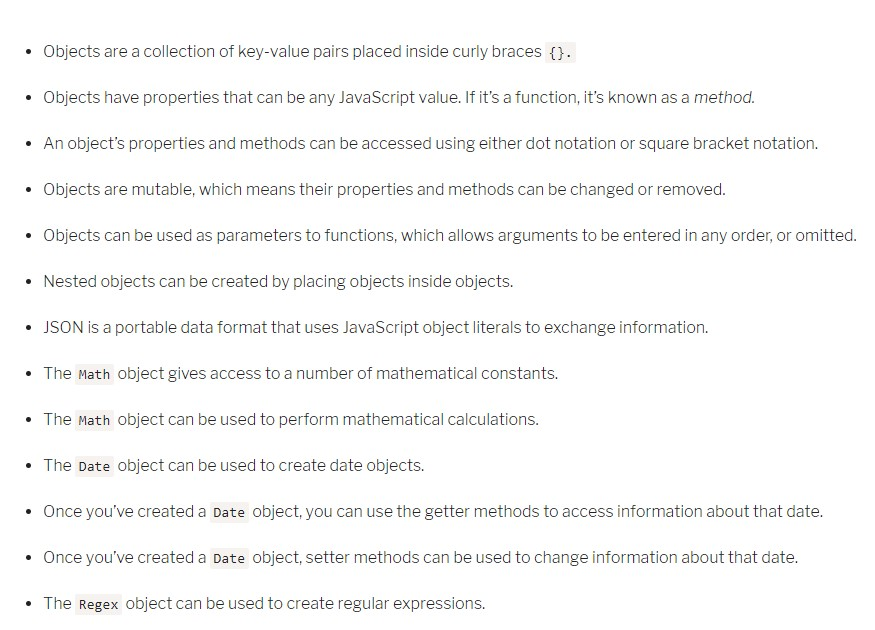

Week 3 January 20-25, 2020
- This in a global context
When this is called outside of any function, in a global context, this defaults to the Window object in the browser. - This in object construction
When you create a new instance of an object with the new keyword, this refers to the instance. - This in an object method
Methods are fancy words for functions that are associated with an object, this within any method refers to the object itself. - This in a simple function
Simple functions are functions you know extremely well. Anonymous functions written in the same form are also considered simple functions. On browsers, this is always set to Window in a simple function. The same is true even if you call a simple function in an object method. - This in arrow functions
this in an arrow function is always the same as this around it (in its immediate scope). So, if you use arrow functions within an object method, the this context stays as the object, not Window. - This in event listeners
this is set to the element that fired the event in an event listener - 